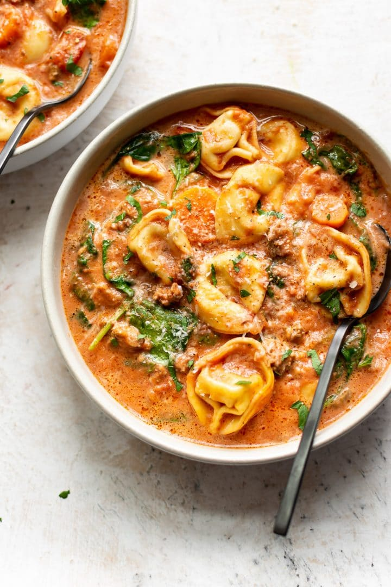

Return back to home page
Crockpot Tortellini Soup with Sausage

About the Soup:
I am a huge fan of this pasta made with Tortellini and Italian Sausage. It also seems to be a crowd pleaser with my girlfriend
as well who is quite the picky eater.
soup only requires one cooking tool, the humble Crockpot and requires only a few
mins of attending cooking time.
Time to Make:
3-4 hours on high
Ingredents:
- 1 (17.6 oz) package of spicy Italian Sausage
- 1/2 a medium onion
- 2 medium carrots
- 2 sticks of celery
- 4 cloves of garlic
- 1 (28 fluid ounce) can of crushed tomatoes
- 1 (14 oz) can of diced tomatoes
- 1 box of spicy chicken broth
- 2 packages of dried Tortellini (idealy spinich)
- 3/4 cup of whipping cream/heavy cream
- Half a bag of baby spinich
- Salt and pepper to taste
Instructions:
- Take your sausages out of their casings and crumble them into a skillet. Add the chopped onion. Sauté for about 7 minutes. Add the garlic in towards the end so it doesn't burn. Spoon out most of the fat (you don't need to be precise... fat gives the soup more flavor). Add the sausage mixture to your Crockpot.
- Meanwhile, chop your carrots and celery. Add all ingredients except for the tortellini, spinach, cream, and salt & pepper to the Crockpot. Keep in mind that if you want the soup to cook in 3-4 hours, the carrots will have to be chopped pretty finely. If you're cooking it for 7-8 on low or 4-5 hours on high, you can chop them larger.
- About 30 minutes prior to serving, add in your cheese tortellini, cream, and spinach (I set the heat to "high"). Give it a stir occasionally. Season with salt & pepper as needed prior to serving.
Recipe Notes:
- I used a 5-pack of Johnsonville mild Italian sausages. Anything in that ballpark will work quantity-wise (you can even use ground sausage meat if that's easier). Also, feel free to sub with spicy sausage!
- The leftovers of this soup do soak up the broth a lot, so this soup is best eaten when it's fresh. I suggest adding more chicken broth to leftovers if you need to.
- This is the 7-quart Crockpot I used to make this recipe. My Crockpot was pretty full by the time I added the tortellini.
- You can make this soup without the cream and it'll still taste good.
Link to the original recipe:
Click Here to go to the site